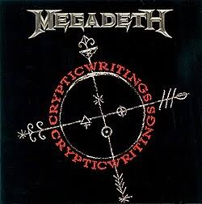
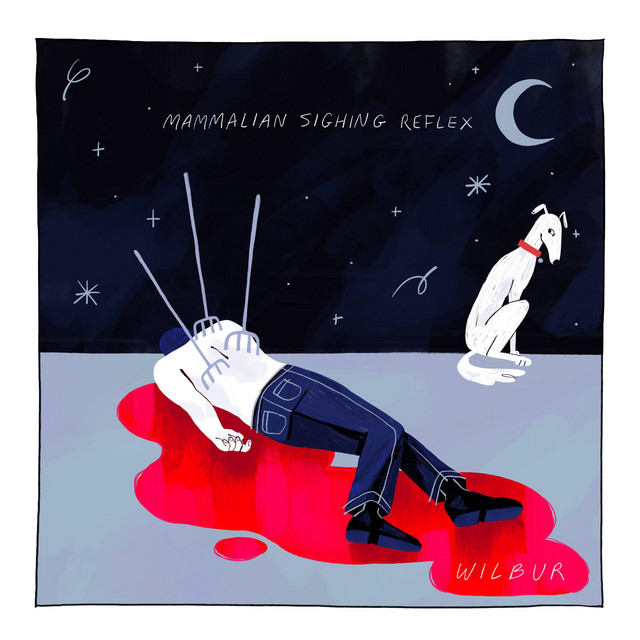
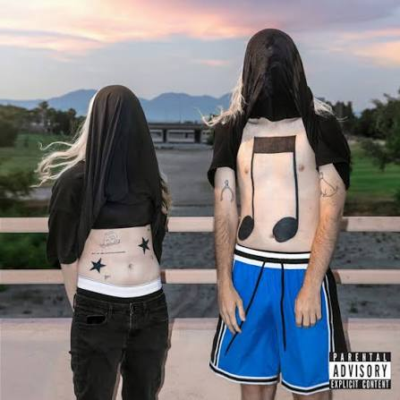
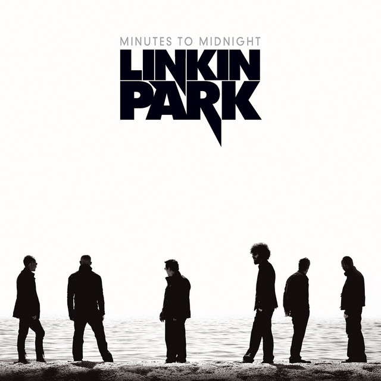
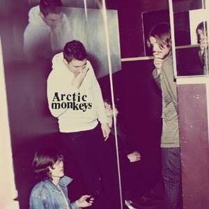
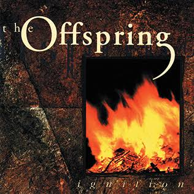

Hello, this is just a lil about my random music tastes, favorite songs and whatnot. August 11, 2026 (If it’s been a month this prolly isnt as accurate anymore)
Top 7 songs (not in order, that'd take me days to figure out)
This house is a circus, artic monkeys - Found this last year and its still a banger even after repeating it for a billion years straight. This is one of the first bands I found early on in 7th grade that was outside of edm/fnf music

Vortex, Megadeth - The reason for this one is ‘cause it’s always been a good classic for me to come back to in situations where I need to find a middleground for picking a song.

Around the Pomegranate, Wilbur Soot - Song that found me in my darkest moments (ik that sounds a bit corny). But really helped me when I was completely lost in sadness and grief. Still look back at it even if it’s been 2 years. I enjoyed this whole album but this song stuck out to me and reminds me of the times.

Doritos and Fritos, 100 gecs - Song I found from one of the best animatics I’ve ever seen (check out bbpanzu). It’s a bit different from what I normally listen to but it’s neat.

Given up, Linkin Park - Found this during crew while it was being blasted on the bus. Pretty good song.

Crying lightning, artic monkeys - Really like the atmosphere of this song. I dont have much to say but its an absolute banger prolly my top 3.

Dirty Magic, The offspring - Song I’d listen to with my dad. Always plays in the car whenever the ride is an hour or longer.

Honorary Mention
Thanks for the Venom, My Chemical Romance - Found this recently so I may have some bias but it’s just an absolute banger. I never listened to the band before but holy shit it’s cool.